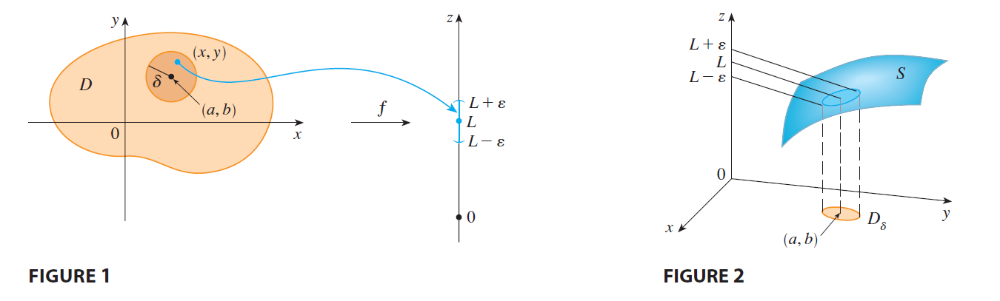

Definition
Let \(f\) be a function of two
variables whose domain \(D\) includes
points arbitrarily close to \((a, b)\).
Then we say that the limit of \(f(x,
y)\) as \((x, y)\) approaches
\((a, b)\) is \(L\) and we write:
\[ \lim_{(x, y) \to (a, b)} f(x, y) = L \]
if for every number \(\varepsilon > 0\) there is a corresponding number \(\delta > 0\) such that
\[ \text{if } (x, y) \in D \quad \text{and} \quad 0 < \sqrt{(x - a)^2 + (y - b)^2} < \delta \quad \text{then} \quad |f(x, y) - L| < \varepsilon \]
Simple Interpretation Function \(f(x,y)\) value approaches \(L\) regardless of the path through which \((x,y)\) approaces \((a,b)\).

Limit Does not Exist if Find two paths along which function values approaches different limit.